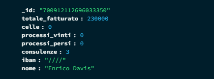

Cosa c'è dietro il bot?
Creare un bot per un server RP non è solo questione di codice: c'è una buona dose di progettazione, testing e ottimizzazione. Ecco come costruisco i miei bot per gestire gli stipendi degli avvocati e degli agenti.
Le Tecnologie Utilizzate
- Node.js: La base di tutto il progetto. Utilizzo Node.js per eseguire i bot, grazie alla sua velocità e affidabilità nel gestire comandi e interazioni in tempo reale. Documentazione ufficiale di Node.js
- Discord.js: Una libreria potentissima per interagire con l'API di Discord. Con questa libreria, gestisco tutti i comandi, i messaggi e le interazioni nel bot Discord. Documentazione ufficiale di Discord.js
- MongoDB: Per tenere traccia dei dati (stipendi, storici dei processi, ecc.), utilizzo MongoDB, che mi permette di avere un database flessibile e scalabile. Documentazione ufficiale di MongoDB
- Dotenv: Dove tenere tutte le credenziali che devono rimanere segrete. Documentazione ufficiale di Dotenv
Galleria immagini

MongoDb Compass, un database noSql che usa documenti json, utilizzato per il database, si basa su id Discord.
Allego solo questa visto che è la più interessante ed il codice è caricato come file.
Il team
Il developer dell'intero bot sono solamente io ma in tutta la parte di testing voglio ringraziare tutta la community di LemonCity(Server in cui gioco che non ho citato fin'ora) che si è offerta di testare il bot in tutti i suoi aspetti ed ha atteso pazientemente eventuali fix.